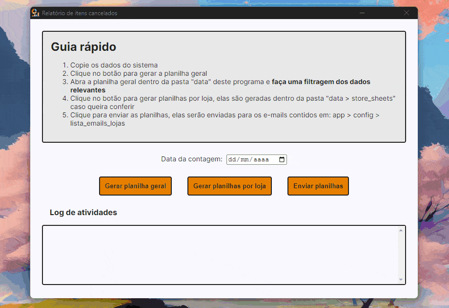

A inspiração para este projeto surgiu de desafios enfrentados no ambiente de trabalho. Esta era uma tarefa demorada de criar manualmente relatórios para 37 lojas diferentes, exigindo de 1 a 2 horas todos os dias. Portanto, o projeto visa resolver esse problema automatizando todo o processo, reduzindo o tempo necessário para meros 20 minutos.
| ID | Requisitos Funcionais |
|---|---|
| RF-01 | O script deve gerar uma planilha com as informações obtidas no sistema da empresa |
| RF-02 | Com base na planilha geral, o sistema deve separar as informações em planilhas individuais para cada loja |
| RF-03 | O sistema deve enviar os relatórios por e-mail para cada e-mail de cada loja |
| RF-04 | O sistema deve conter interface para que o usuário não tenha que manejar os scripts |